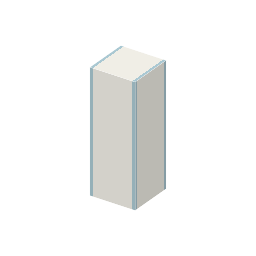

説明
①子ども 粉をつめた細い管。混ざった色を流すと、色ごとに分かれる。
②学生 ソーダ石灰ガラス2＋方解石（炭酸カルシウム）で作る。葉の色素の液を持って右クリック → 上にしみこむ。ベンゼンを持って右クリック → 流されて分かれ、だいだいのカロテン（先に出る）と緑のクロロフィル（帯で残る）がとれる。流す液がないと分かれない。
③大人 流す液に乗って進むとき、粉にくっつきやすい物ほどゆっくり進む。くっつきにくいカロテンが先頭、つぎにキサントフィル（黄）、クロロフィル a（青緑）、b（黄緑）の順に帯になる。
④ガチ 1906年ロシアのツヴェットが、炭酸カルシウムをつめた管で葉の色素を色の帯に分け、「色を書く」という意味でクロマトグラフィーと名付けた。1941年マーティンとシングの分配クロマトグラフィー（1952年ノーベル化学賞）、1952年ガスクロマトグラフィーへと進み、今はトリクロロシランや希ガスに残ったわずかな不純物を量るのに使う。
作り方
使い道
（このアイテムを使うレシピは無い）